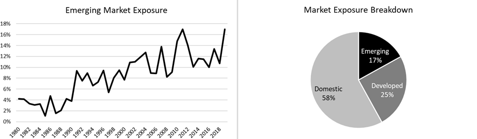
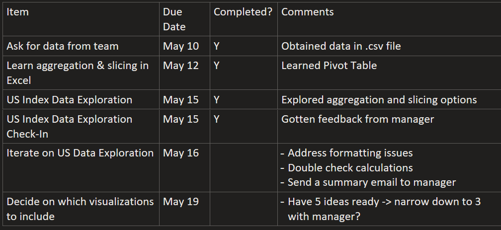

For my first project at CPPIB, I analyzed 10 major stock indices for their exposure to emerging markets. My work allowed the macro strategies team to better understand their investment risks.
In addition to demonstrating my ability to visualize data and draw meaningful conclusions, I also demonstrated my project management abilities by creating a detailed project management plan to track my progress.
Stock index exposure can be broken down into 3 categories: domestic, developed market, and emerging market. The domestic market refers to where the stock market is located in; for example, the domestic market for S&P 500 would be the United States. Developed and emerging markets exposures correspond to the stock index's exposure to foreign markets (Canada, China, Japan, etc. in the case of S&P).
Given that a major portion of CPPIB portfolio is in emerging market investments, I visualized the breakdown of exposures to better understand the risks associated with these stock indices.
I also went above and beyond my responsibility by suggesting risk management strategies and hedging ideas to the team based on my observations.
I used OneNote to set deadlines for myself and record project progress. Having a detailed management plan allowed me to prioritize certain tasks and adapt my schedule to fit the business requirements.
